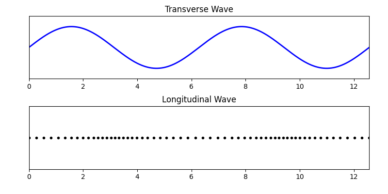
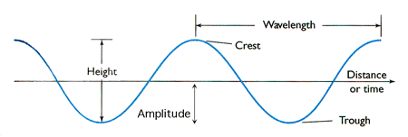
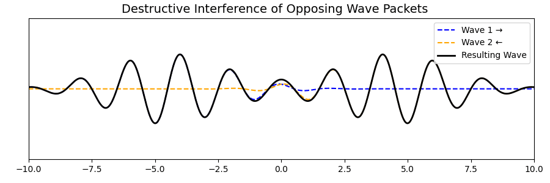
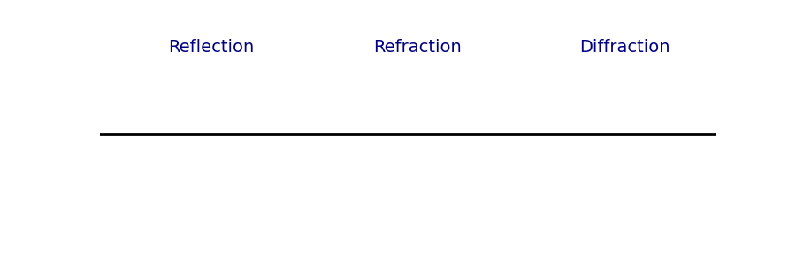
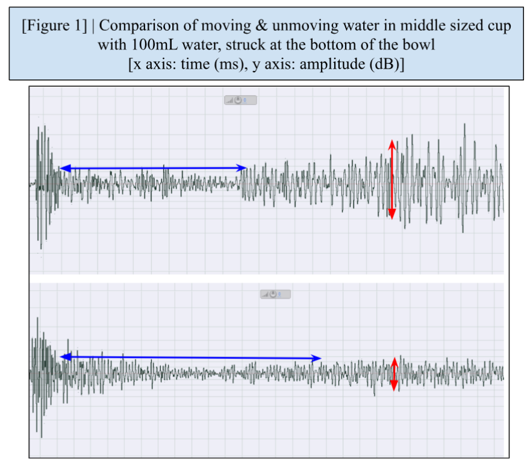
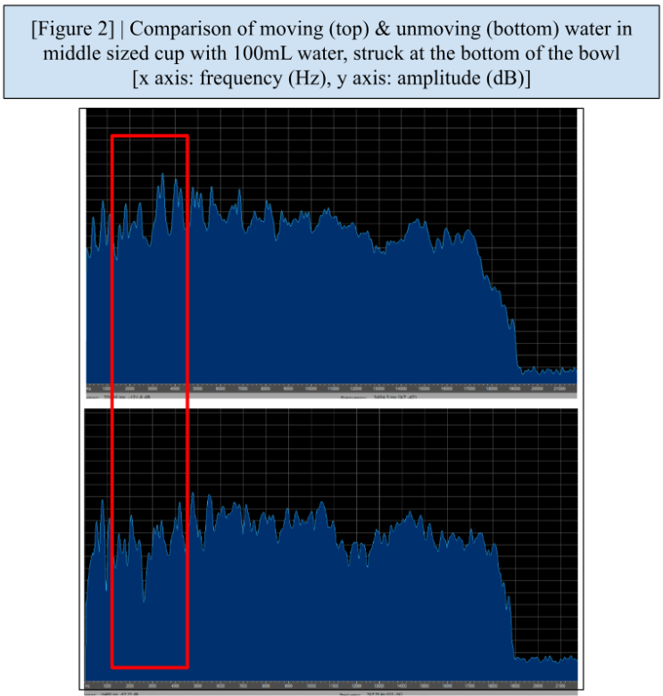
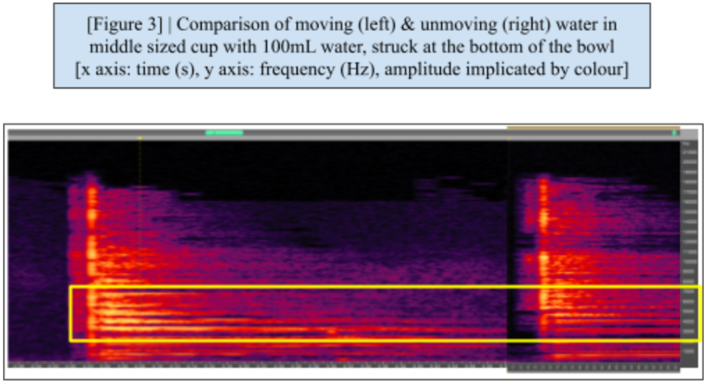

: speed of the wave
: speed of the wave
 : position
: position
 : time.
: time.
Seeing Sound: A Fundamental Guide to Wave Experimentation
SeungYun Lee
Sound is all around us, but truly understanding it requires more than just hearing. When I first set out to study sound scientifically, I found myself lost between dense physics textbooks, fragmented youtube tutorials, and a mess of scattered research papers. Each source seemed to assume the reader either already knew too much or had endless time to piece things together. I had neither.
This e-book was born out of that frustration and the desire to make the journey easier for the next person. Whether you're a student curious about wave physics, a teacher looking for accessible demos, or just someone who wants to see and hear how sound works, this guide is for you.
By bridging the gap between academic theory and practical exploration, I hope this resource becomes more than just a manual. May this book not only help you learn, but also encourage you to ask better questions, try new methods, and discover the beauty of physics in sound.
I. Vibrations and the Types of Waves
2.1 Fundamental Wave Properties
2.3 Superposition and Interference
2.4 Reflection, Refraction, and Diffraction
3.1 Derivation of the Wave Equation
4.1 Doppler Effect and Practical Applications
4.2 Acoustic Resonance and Harmonics
4.3 Sound Propagation in Different Media
V. Programs and How To Use Them
1. Audacity : Best for beginners and quick FFT analysis
2. Sonic Visualiser: Best for spectrograms and frequency-over-time analysis
3. Adobe Audition: Best for high-resolution, professional analysis
4. Python (with NumPy, SciPy, and Matplotlib): Best for customizable, code-based analysis
6.1 Experiment Question and Procedure
6.2 Sample Results and Analysis
1. Start With a Clear Question
6. Record in a Quiet Environment
A wave is a disturbance that transfers energy from one place to another without the permanent displacement of the medium’s particles. Waves can be classified based on their motion:

Longitudinal Waves: The displacement of particles is parallel to the wave’s direction of travel (e.g., sound waves in air, seismic P-waves). A longitudinal wave can be represented as a transverse graph, where the compressed regions correspond to the peaks and the rarefied regions correspond to the troughs (See Chapter 2).
Transverse Waves: The displacement of particles is perpendicular to the wave’s direction of travel (e.g., water waves, light waves, seismic S-waves).
Surface Waves: A combination of longitudinal and transverse waves that occur at the boundary between two media (e.g., ocean waves).
The nature of a wave determines how it interacts with its surroundings, influencing phenomena such as reflection, refraction, diffraction, and interference.
The behavior of waves can be described using several key properties:

Wavelength (λ): The distance between two consecutive crests (in transverse waves) or compressions (in longitudinal waves).
Frequency (f): The number of oscillations per second, measured in Hertz (Hz). Higher frequencies correspond to higher-pitched sounds.
Amplitude (A): The height of the wave, related to the loudness of the sound. A greater amplitude corresponds to a more intense wave.
Wave Speed (v): The rate at which a wave propagates through a medium, calculated using the formula:
Waves transport energy without transporting matter. The amount of energy a wave carries is directly related to its amplitude. For example, louder sounds have higher energy due to greater particle displacement. The intensity (I) of a wave is given by:
where P is power, and A is area. Intensity is measured in Watts per square meter (W/m²) and follows the inverse square law, meaning sound intensity decreases as distance increases.
When two or more waves interact, their displacements add together through superposition. This results in different types of interference:

Constructive Interference: When waves combine to produce a larger amplitude. Example: louder sounds in certain locations at a concert hall.
Destructive Interference: When waves combine to cancel each other out. Example: noise-canceling headphones using inverted sound waves to eliminate noise.

Reflection: Waves bounce off surfaces, following the law of reflection (equation)
ex) echoes
Refraction: Waves bend when they change speed due to moving between different media. ex) sound bending over a lake at night due to temperature differences.
Diffraction: Waves spread out after passing through a small opening or around an obstacle. ex) hearing sound around a corner.
To understand how waves propagate, we use the fundamental wave equation. It describes the motion of waves in a given medium. The one-dimensional wave equation is given as:
Where:
: displacement of the medium
: speed of the wave
: position
: time.
(video)
This equation is derived from Newton’s second law and Hooke’s law for elastic media. It applies to sound waves, light waves, and even water waves under certain conditions. A deeper understanding of this equation allows us to model real-world wave behaviors.
The Doppler Effect describes how the frequency of a wave changes when the source and observer are in motion relative to each other:
Where:
: observed frequency,
: speed of sound in the medium,
: velocity of the observer(positive if moving toward the source),
: velocity of the source (positive if moving toward from the observer),
 : original frequency.
: original frequency.
The Doppler Effect has several uses, such as applications in radar and speed detection (the kind used by police to measure vehicle speeds), astronomical redshift (used to study the movement of stars and galaxies), and medical ultrasound imaging (used to measure blood flow velocities in arteries and veins), all of which are fundamental to enable comfort or ensure health in our daily lives.
Resonance occurs when a system oscillates at its natural frequency due to an external periodic force. This happens because waves transport energy (as explained in 2.2). When an object is subjected to a wave, it absorbs the energy and starts vibrating (or vibrates at a larger amplitude). This phenomenon is essential in:
Musical Instruments: String and wind instruments rely on resonance to amplify sound.
Architectural Acoustics: Designing concert halls to optimize sound quality.
Structural Engineering: Avoiding destructive resonance in buildings and bridges.
The speed of sound changes based on the medium. For example, below are some of the speeds of sounds through different media:
|
Medium |
Speed of Sound |
|
Air (20°C) |
~343 m/s |
|
Water |
~1480 m/s |
|
Steel |
~5,960 m/s |
This is because in general, the velocity of a wave depends on the inertial property and elastic property of the medium:
Thus, the equation for the speed of sound in different media differs as in the examples below:
|
In a string |
In a fluid |
In a solid |
In an ideal gas |
|
|
|
|
|
|
: tension : linear density |
: bulk modulus : density |
: Young’s modulus : density |
: adiabatic index : gas constant : absolute temperature
|
For wave-based experiments like the Wailing Bowl or Doppler effect demos, a few specific programs can help you extract amplitude graphs, frequency spectra, and time-varying spectrograms. Below are four recommended tools, from the most beginner-friendly to the most customizable, along with detailed instructions on how to use them effectively.
Audacity is a free, open-source audio editing and analysis tool. It’s widely used in classrooms and research projects because of its balance between simplicity and functionality. After downloading it from https://www.audacityteam.org , you can open the program and start by importing your sound file. WAV or MP3 formats work well. To import, go to File > Import > Audio, or simply drag your audio file into the timeline.
Once loaded, you’ll see a waveform display. This is a visual representation of how sound amplitude (volume) changes over time. You can zoom in using Ctrl+1 or View > Zoom In to examine the fine structure of the wave.
To analyze the frequency components of a sound (which is critical for studying resonance or modulation), highlight a segment of the waveform and then go to Analyze > Plot Spectrum. A window will pop up showing the Fast Fourier Transform (FFT) of that segment. You can change the FFT size (1024, 2048, etc.) to increase resolution; larger FFT sizes provide finer frequency detail but may blur time-based changes.
|
Advantages |
Limitations |
|
Completely free and open-source Very easy to use, with a low learning curve Offers clear visual waveform and FFT spectrum views Compatible with almost all common audio formats |
FFT is static—it only shows the frequency spectrum of the selected segment, not how it evolves over time Limited ability to overlay multiple analyses or view spectrograms in high resolution No built-in way to directly view phase or harmonic structure in detail |
Sonic Visualiser is a free tool specifically built for analyzing sound data rather than editing it. It can be downloaded at https://www.sonicvisualiser.org . Once opened, you can import a file by selecting File > Open and choosing your WAV or FLAC recording (MP3 is not supported). The program then allows you to view your audio in multiple ways. The default is a waveform, but for frequency analysis, go to Pane > Add Spectrogram.
The spectrogram shows time on the horizontal axis, frequency on the vertical axis, and amplitude as color brightness (usually yellow for strong sounds, purple/black for weak). This is incredibly useful for detecting how sound frequencies appear, fade, or shift over time (perfect for experiments involving resonance, modulation, or frequency drift).
You can also add other layers like pitch estimation, waveform overlays, or annotations. Each layer is customizable: you can adjust window size, overlap, and color scale in the settings by clicking the small gear icon next to the layer.
|
Advantages |
Limitations |
|
Excellent time–frequency visualization Non-destructive: you never alter the original audio Great for multi-layer views (spectrogram + waveform + notes) Visualizes subtle shifts in pitch and amplitude over time |
Slightly steeper learning curve than Audacity No editing features—you can’t trim or alter audio Limited compatibility with compressed audio files (no MP3) |
Adobe Audition is a paid, professional-grade audio workstation. It comes with advanced tools for recording, editing, and analyzing sound in high resolution. After opening the program and importing your sound (File > Open), you can view both the waveform editor and the spectral frequency display simultaneously. To toggle between them, click the buttons in the top-left corner of the waveform window or press Shift+D to enter the spectral display mode.
In the spectral view, time is along the x-axis, frequency along the y-axis, and brightness shows intensity, just like in Sonic Visualiser, but with much higher resolution and better color control. You can also zoom in and analyze individual frequency bands by selecting them with the marquee tool. In addition, Audition allows for real-time FFT spectrum analysis. Go to Window > Frequency Analysis, play your audio, and you’ll see the spectrum shift dynamically in sync with playback.
To export your data, you can either take high-resolution screenshots or use the built-in tools to generate CSV data from spectral plots (though this requires some manual work). There are also precise effects and tools to isolate harmonics, remove background noise, and measure delay times.
|
Advantages |
Limitations |
|
Highest resolution and most precise frequency analysis Dual waveform/spectrogram editing Advanced filtering, spectral selection, and comparison tools Integrated recording and editing workflow |
Subscription-based (paid software) May be too complex for beginners Requires a fairly powerful computer to run smoothly |
If you’re comfortable with coding or plan to expand your project into deeper research, Python gives you full control over the analysis process. Start by installing the necessary packages using pip:
pip install numpy scipy matplotlib
To analyze a WAV file, you can use scipy.io.wavfile.read() to load your data. From there, you can plot the raw waveform (amplitude vs. time) using matplotlib.pyplot, and then use the numpy.fft module to compute the Fast Fourier Transform for frequency analysis. For example, plotting the FFT will allow you to customize windowing functions, adjust resolution, or even overlay multiple frequency domains for comparison.
You can also generate your own spectrograms using scipy.signal.spectrogram() or matplotlib.pyplot.specgram(). These let you tune parameters like FFT size, overlap, and color scaling to match your needs. Python’s power lies in the fact that you can automate batch comparisons, integrate physical equations, and even apply machine learning models if you go far enough.
|
Advantages |
Limitations |
|
Full control and automation over analysis Customizable graphs, overlays, and data pipelines Perfect for integrating sound data with physics calculations or AI models Free and open-source |
Requires basic programming knowledge No drag-and-drop interface; everything is done via code
You’ll need time to debug or tweak scripts if errors arise
|
Each of these programs lets you see sound in a new way—whether you’re studying how frequencies shift when water is in motion or how interference patterns emerge from a pair of overlapping wave sources. Start with Audacity to get a feel for basic waveform behavior, then move to Sonic Visualiser or Python to explore deeper. The goal is always to connect your raw sound data with the wave theory you’ve learned earlier in this book.
A fun experiment to do is an experiment from the 2025 IYPT problems:
|
15. Wailing Bowl When you strike the side of a metal bowl containing some water, you can hear a characteristic sound. The sound changes when the water in the bowl is moving. Explain and investigate the phenomenon. |
This problem investigates wave interactions in coupled media. Specifically, it talks about the superposition of mechanical vibrations (= waves) in a solid and surface waves in a liquid.
There are many different ways to experiment in relation to this question; here’s an example experiment to do:
|
WAILING BOWL EXPERIMENT
What you’ll need:
Steps:
Try varying:
|
There are infinitely many results you can get depending on your materials, recording setup, and how you stir or move the water. There are also many different analyses you can do. You might analyze how:
An example result might look like this:
Hear the sample resulting sounds:
|
No movement: |
Movement: |
Our experiment was conducted by rotating a metal bowl in a circular motion while striking it with a consistent pendulum-like tool. We used a bowl filled with either 20mL or 100mL of water, and sound was recorded in both moving and still conditions. The setup ensured that only the water’s motion varied while all other factors remained consistent. The sound data was then analyzed using Fast Fourier Transform (FFT) and spectral frequency analysis to compare how motion altered wave behavior.

In the time-domain waveform (Figure 1), we observed that when the water was in motion, the aftermath of the collision-the wave pattern following the initial impact-had a significantly higher amplitude and began sooner than in the still water condition. This phenomenon shows that energy coupling between the bowl and the fluid intensified the transmission of vibrational energy, likely due to dynamic pressure feedback from moving water. Since the moving water altered the mass distribution in real time, it influenced the bowl’s vibrational response, shortening the delay and amplifying the aftermath wave. This highlights how wave superposition and constructive interference between mechanical and surface waves can enhance the overall amplitude.
In a separate analysis of the frequency domain (Figure 2), FFT data revealed that specific frequency bands-particularly between 2000Hz and 4000Hz-were amplified when the water was rotating. This phenomenon indicates that moving water can trigger higher-order vibrational modes in the metal bowl. These modes might not be as strongly excited in the still condition. The presence of motion introduces irregular forces and modulates the bowl’s surface oscillations, which, according to wave theory, can shift energy into new harmonic ranges through nonlinear resonance. 

Additionally, in the spectrogram comparison (Figure 3), we saw brighter regions-particularly yellow-appearing more strongly in the high-frequency zones when water was moving. Since spectrogram color intensity corresponds to amplitude, this supports our earlier findings by showing that acoustic energy was greater and more sustained in the presence of fluid motion. This aligns with the idea that surface waves in the liquid act as modulators, enhancing or redistributing wave energy in the coupled system.
Together, these results demonstrate the dynamic and rich interaction between vibrational modes in solids and wave behaviors in fluids. Moving water doesn’t just passively dampen sound-it actively reshapes the wave output by altering the system’s boundary conditions, resonance, and interference patterns.
Before diving into any wave experiment, it’s important to understand the fundamental habits and practices that make an experiment reliable, repeatable, and meaningful. These notes aren't tied to any one project—instead, they’re general guidelines that apply to almost all sound or wave experiments, whether you're working with a vibrating bowl, tuning forks, or digital simulations.
Every experiment should begin with a guiding question or hypothesis. Instead of "let's just try this and see what happens," ask something specific like:
"Does changing the amount of water affect the resonance frequency?"
"Will rotating the bowl change the waveform's amplitude?"
A clear question helps you choose what data to collect and what patterns to look for.
Only change one variable at a time. For example, if you're testing how water volume affects resonance, keep the bowl size, striking force, and location the same each time. Otherwise, it’s impossible to tell which factor caused the change in sound.
Common variables in wave experiments include:
Material (metal, glass, etc.)
Tension (for strings)
Medium (air, water, etc.)
Force applied
Distance from microphone or sensor
Always use the same microphone, same phone, same bowl, or same speaker when comparing different trials. Even small differences in hardware can change the results, especially in audio recordings. Keep track of your setup using photos or drawings in your lab notes.
Even if something seems unimportant, write it down. The exact angle of the bowl, the temperature of the room, or how much pressure you applied when holding something—all of this can matter more than you expect. You might not realize it until you’re comparing two trials and wondering why they turned out differently.
Write things like:
"Used metal bowl, 100mL water, struck with rubber-tipped rod"
"Recorded with iPhone 11, placed 30cm away from bowl"
"Water was vibrating slightly from prior motion"
One test is never enough. Even two or three can be unreliable. If you really want to prove that a pattern is real and not just coincidence, aim for at least five trials per setup. Average the data if needed, or look for consistent trends.
Background noise is one of the biggest problems in wave experiments. It adds random frequencies into your data and makes analysis harder. Try to record in a quiet room, and if possible, during a time when there’s minimal vibration or foot traffic.
Tip: Clap your hands once and record the sound. If the waveform shows extra background hum or echo, your room may not be ideal.
Don’t just look at the graph and guess what it means. Ask:
“Is the peak amplitude higher in this trial?”
“Is the frequency range wider or more compressed?”
“Did the resonance take longer to fade out?”
Use these guiding questions while comparing FFT plots, waveforms, and spectrograms.
You might do everything perfectly and still get weird results. That doesn’t mean the experiment failed—often, it means there’s something interesting going on that you didn’t expect. Write it down. Then, if possible, change just one thing and try again.
Always keep the original audio files and screenshots of your graphs. If you later need to re-check your work or run a different kind of analysis, you’ll be glad you saved them. If you’re using software like Audacity or Sonic Visualiser, also save project files so you can reopen your session later without losing your settings.
Once your data is collected, take time to think:
What did you learn from this experiment?
What would you do differently next time?
What questions do you have now that you didn’t have before?
These reflections are often where your next great experiment idea will come from.
University of British Columbia. (n.d.). Wave characteristics . ATSC 113: Weather for Sailing, Flying & Snow Sports. The University of British Columbia. https://www.eoas.ubc.ca/courses/atsc113/sailing/met_concepts/08-met-waves/8b-wave-characteristics/index.html
Halliday, D., Resnick, R., & Walker, J. (2020) Principles of Physics . 10th Edition, Wiley and Sons.
김양한, & 남경욱. (2013) Lecture Notes on Acoustics. , 청문각
Kirkup, Les. (1994) Experimental Methods., J.Wiley
김중복, 김현아, & 김수경. (2006) (과학교사를 위한) 빛과 파동 ., 홍릉과학출판사
IYPT 2025 Problems.
International Youth Physics Tournament.
http://iypt.org/problems/problems-for-the-38th-iypt-2025/